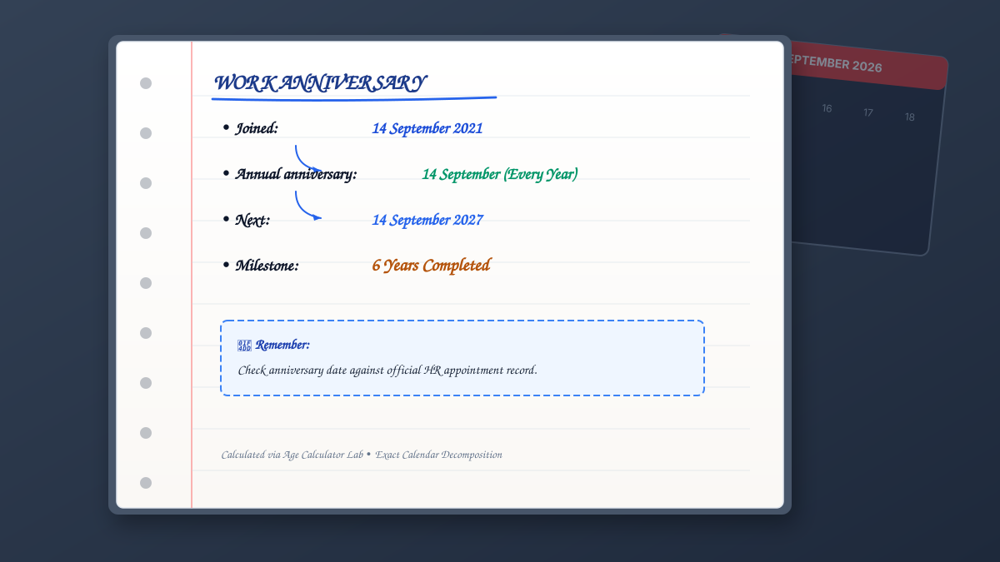
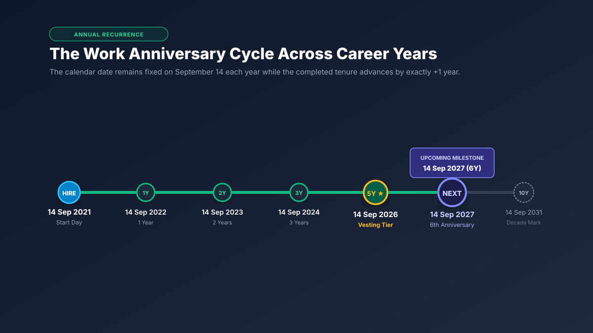

Your work anniversary falls on the exact same calendar month and day as your official start date every single year. To calculate your next anniversary, check today’s date against your month and day:
- If your anniversary has not yet occurred this year: Your next anniversary is on your start month and day in the current calendar year.
- If your anniversary has already passed this year: Your next anniversary is on your start month and day in the next calendar year.
- Completed milestone: Your next anniversary marks
Next Year − Start Yeartotal completed years of service.
What Is a Work Anniversary?
A work anniversary (also referred to as an employment anniversary, service anniversary, or workversary) is the annual recurrence of the date an employee officially joined an organization. Much like a personal birthday marks another completed year of life, a work anniversary commemorates another 365-day (or 366-day) cycle of professional dedication, contribution, and organizational retention.
While simple on the surface, understanding how anniversaries function involves several key distinctions:
- The Start Date (Day 0): The date you enter the company and begin working is your start date, hire date, or joining date. You have completed zero years of service on this date.
- First Anniversary (1 Year Completed): Occurs exactly twelve calendar months after your start date. When you celebrate your 1st anniversary, you have officially locked in one full year of service.
- Subsequent Anniversaries (Years 2, 3, 4, ...): Every subsequent annual cycle advances your completed tenure count by exactly one year on your calendar anniversary day.

The 3-Step Calculation Rule for Next Work Anniversary
Whether you are an employee anticipating your next career milestone or an HR manager scheduling quarterly service awards, you can calculate the exact date and completed milestone of the next work anniversary using this deterministic 3-step formula:
Step 1: Extract the Month and Day Anchor
Look at the official start date on record (for instance, September 14, 2021). The anchor is Month: September (09) and Day: 14.
Step 2: Compare With Today’s Reference Date
Construct the provisional anniversary date using the current calendar year (e.g., September 14, 2026). Compare this provisional date with today’s date:
- If provisional date > today → Next anniversary is in the current year.
- If provisional date < today → Next anniversary has passed; next occurs in current year + 1.
- If provisional date == today → Today is your anniversary! (0 days remaining; celebratory milestone achieved).
Step 3: Compute the Milestone Year
Subtract the original start year from the target anniversary year: Milestone = Anniversary Year − Start Year. If your next anniversary is in 2027 and you started in 2021, your upcoming celebration marks your 2027 − 2021 = 6th Work Anniversary.
Live Interactive Work Anniversary Calculator & Countdown
Use this interactive calculator to enter your start date. It automatically evaluates the calendar position against your reference date, determines your exact next anniversary date, calculates the milestone number, and displays an exact real-time countdown in days:
Work Anniversary & Countdown Widget
Live InteractiveHow to Calculate the Exact Days Until Your Next Work Anniversary
Calculating the exact number of days remaining until your next work anniversary requires measuring elapsed calendar days between two specific dates: today (reference date) and your next anniversary date.
A common mistake is taking the remaining months and multiplying by 30 or taking remaining weeks and multiplying by 7. Because calendar months vary between 28, 29, 30, and 31 days, and leap years insert an extra day into February, manual estimations quickly develop an error margin of 1 to 3 days.
The Exact Calendar Difference Formula:
Days Remaining = DateValue(Next Anniversary Date) − DateValue(Current Date)
When both dates are evaluated at midnight (00:00:00), the result is the precise integer count of full 24-hour days remaining until the anniversary arrives.
12-Month Recurrence Cycle: The Annual Calendar Dial
Every work anniversary anchors an employee to a specific calendar quarter and month. Below is the 12-month calendar distribution. Changing your start date in the calculator above updates which calendar slot owns your annual celebration:
Quarterly Distribution of Annual Anniversaries

Next 5 Anniversaries Projection Matrix
Long-term career planning often involves looking several years into the future—anticipating when you will cross into higher paid-time-off (PTO) accrual tiers, satisfy retirement vesting requirements, or reach company sabbatical eligibility.
Here is the dynamic projection schedule for your next five consecutive anniversaries based on your selected start date:
Interactive Career Milestone Finder
Corporate service recognition programs traditionally focus on key five-year anniversary checkpoints. Below is your comprehensive milestone calendar showing the exact target dates for every major corporate service milestone:
| Milestone Tier | Completed Years | Exact Calendar Date | Status |
|---|
3 Detailed Real-World Calculation Examples
To illustrate how the 3-step anniversary formula operates across various points throughout the calendar year, examine these three real-world workplace scenarios:
Anniversary Has Not Yet Arrived
Start Date: November 10, 2021
Reference Date: September 23, 2026
Evaluation: November 10 is later in the calendar year than September 23. Therefore, the next anniversary occurs in 2026.
→ Next Anniversary: November 10, 2026
→ Milestone: 5th Anniversary (5 Years)
→ Countdown: 48 Days Remaining
Anniversary Passed Earlier This Year
Start Date: March 15, 2019
Reference Date: September 23, 2026
Evaluation: March 15 occurred 6 months ago. The 7th anniversary occurred on March 15, 2026. The next anniversary falls in 2027.
→ Next Anniversary: March 15, 2027
→ Milestone: 8th Anniversary (8 Years)
→ Countdown: 173 Days Remaining
Today Is Your Work Anniversary!
Start Date: September 23, 2022
Reference Date: September 23, 2026
Evaluation: The start month and day match today’s calendar date exactly. You have locked in completed service today.
→ Status: Active Celebration Today!
→ Milestone: 4th Anniversary (4 Full Years)
→ Next Anniversary: Sept 23, 2027 (365 Days)
Work Anniversary vs. Years of Service: The Key Difference
A common point of ambiguity in human resources documentation is the difference between a work anniversary and years of service. While closely intertwined, they serve fundamentally different computational and communication roles:
| Attribute | Work Anniversary | Years of Service |
|---|---|---|
| Definition | A specific recurring calendar date and milestone event. | Continuous cumulative duration of employment time. |
| Measurement | Discrete calendar point (e.g., September 14, 2026). | Elapsed duration (e.g., 5 years, 8 months, 12 days). |
| Frequency | Celebrated once every 12 months. | Increases continuously day by day, month by month. |
| Primary Purpose | Recognition, team celebration, service gift awards. | Payroll tiers, severance formulas, retirement vesting. |
| Related Resource | This Work Anniversary Guide | How to Calculate Years of Service Guide |
In short: Your work anniversary is the date you reach a milestone; your years of service is the total amount of time you have given to the company. For the mathematical methods used to calculate elapsed tenure between dates, explore our in-depth companion guide on calculating years of service.
Work Anniversary vs. Employee Tenure
Similarly, employees frequently confuse work anniversary with employee tenure. Employee tenure represents your retention clock with an employer, measuring the continuous span from your official hire date up to today or a separation date.
While your work anniversary stays pinned to the calendar year after year, your employee tenure continuously ticks forward. For a complete guide on how hire dates decompose into exact calendar tenure, breaks in employment, and service bridging, read our tutorial on how to calculate employee tenure from a start date.
Which Start Date Determines Your Work Anniversary?
When determining your official anniversary, you may encounter several different dates in your personal files and HR portals:
- Official Start Date (Joining Date): The first calendar day you actively began work or entered paid status. This is the authoritative date used for all work anniversaries and milestone awards.
- Offer Letter / Acceptance Date: The day you signed your employment contract. This date precedes your employment and is never used as an anniversary.
- Orientation Date: If orientation occurred prior to your first official payroll day, standard corporate policy uses the formal payroll effective date.
- Adjusted Service Date: If you experienced an unpaid sabbatical, leave of absence, or company acquisition, HR may assign an “adjusted service date” for benefit vesting, while retaining your original hire date for social milestone recognition.
How Do Leap Years and February 29 Affect Work Anniversaries?
Employees hired on February 29 during a leap year (such as 2020, 2024, or 2028) encounter a unique calendar puzzle during common years containing only 28 days in February.
How is a Leap Day anniversary celebrated during non-leap years? Organizations adhere to one of two standard conventions:
March 1 Convention (HR Standard)
Under standard payroll and legal systems, an employee has not completed a full year of 365 days until February 28 has entirely concluded. Therefore, the anniversary legally locks in on March 1.
February 28 Convention (Social Recognition)
Many company social committees and workplace recognition software (such as Slack, Teams, or Workday) celebrate the anniversary on the final day of February so the employee is recognized within their hire month.
In both cases, when another leap year arrives four years later, the celebration returns to the authentic calendar date of February 29.
Month-End Start Dates: January 31, March 31, August 31
Employees who join on the 31st of a month never experience ambiguity for their annual work anniversary because twelve months later, the exact same month returns with its full 31 days.
However, for organizations that track probationary reviews (such as 3-month or 6-month reviews), a start date on the 31st requires clamping to the final day of shorter intermediate months. For example, a 6-month review for an employee starting August 31 falls on the final day of February (February 28 or 29), not March 2.
Work Anniversary Milestones and Traditional Corporate Recognition
While every work anniversary is worth celebrating, corporate organizations recognize major milestone years with special awards, gifts, additional paid time off, and executive recognition:
The First-Year Onboarding Milestone
Marks successful integration, completion of onboarding objectives, and first-year retention. Typically celebrated with a welcome card, team lunch, or commemorative pin.
Mid-Level Retention Milestone
Recognizes established expertise and independent mastery. Many companies tie 3-year anniversaries to enhanced 401(k) vesting percentages or higher annual leave brackets.
The Half-Decade Milestone
A premier career checkpoint. Often recognized with formal service award certificates, personalized gifts, corporate jewelry, or extra vacation days.
The Decade Pillar of Service
Signifies exceptional loyalty and institutional knowledge. Celebrated with executive-level dinners, substantial bonus checks, custom plaques, or one-month paid sabbaticals.
The Veteran & Leadership Milestone
Honors senior leaders and long-standing contributors who have shaped organizational culture across technological shifts and economic cycles.
Silver & Pearl Legacy Milestones
The pinnacle of service loyalty. Frequently marked with company-wide town hall tributes, lifetime recognition awards, and retirement benefits transition planning.
Milestone Progression Track
Follow your journey across the primary organizational milestone checkpoints. Each tier unlocks greater seniority and recognition:
How HR Teams Track and Automate Work Anniversaries
Modern People Operations and HR teams do not calculate anniversary dates manually. Instead, automated Human Resource Information Systems (HRIS) such as Workday, BambooHR, ADP, and Rippling handle anniversary logistics:
- Automated Reminder Triggers: Software sends an alert to the employee’s direct manager 30 days and 7 days prior to an upcoming milestone to prepare recognition messages and gifts.
- Digital Workplace Announcements: Automated Slack and Microsoft Teams bots broadcast celebratory banners on the morning of the employee’s anniversary.
- Benefit Tier Stepping: Enterprise payroll systems automatically step up annual leave accrual rates on the exact payroll cycle corresponding to the employee’s 3rd or 5th anniversary.
- Quarterly Milestone Reports: People teams run quarterly projection reports to forecast milestone budget allocations and coordinate gift distributions.
Calculate Your Work Anniversary & Exact Tenure
Enter your official start date to compute your next anniversary date, exact days remaining, completed career tenure, and multi-year milestone projections with zero leap-year drift.
Calculate Your Next Work Anniversary Now →7 Common Work Anniversary Calculation Mistakes
Avoid these frequent pitfalls when determining anniversary dates and tracking upcoming service milestones:
Confusing the completed milestone with the year entered. When you reach your 5th anniversary, you have completed 5 full years and are beginning your 6th year.
Entering the date you accepted the offer instead of your official first working day on company payroll.
Subtracting only Monday through Friday when counting down days. Work anniversary countdowns measure continuous calendar days.
Treating your anniversary date at your current employer as your overall industry career duration.
Failing to account for unpaid sabbaticals or breaks in service that reset or adjust corporate vesting clocks.
Forgetting to verify whether your company celebrates Leap Day hires on February 28 or March 1 during non-leap years.
Assuming awards are distributed on your exact date when your employer holds a single annual fiscal-year awards ceremony.
Frequently Asked Questions
How do I calculate my work anniversary?
Your work anniversary occurs every year on the same calendar month and day as your official start date. To calculate your next anniversary, check whether this calendar date has passed in the current year. If it has not yet arrived, your next anniversary occurs this year. If it has already passed, your next anniversary occurs on the same month and day next year.
How do I find my next work anniversary date?
Take the month and day of your employment start date and pair them with the current calendar year. If that date is later than today, that is your next work anniversary date. If that date is before today, advance the year by one.
How do I calculate the days until my next work anniversary?
Calculate the exact elapsed calendar days by subtracting today's date from your next anniversary date. You can do this by counting remaining whole days or using an automated date-difference calculator.
Is my first work anniversary at 1 year or 0 years?
Your 1st work anniversary marks exactly 1 completed year of service, celebrated exactly 12 months after your start date. The day you join the organization is your start date (Day 0), not your first anniversary.
What is the difference between a work anniversary and years of service?
A work anniversary is a specific recurring calendar date and milestone event (e.g., September 14 celebrating 6 completed years). Years of service is the continuous cumulative duration of time you have worked, expressed in exact years, months, and days.
What date is my work anniversary if I was hired on February 29?
During non-leap years, organizations generally celebrate February 29 start dates on March 1 (the 366th day following hire) or February 28 according to internal HR portal policy. On leap years, it is celebrated on February 29.
Which date determines my work anniversary: hire date or first working day?
Your official start date (the first day you actively work or are placed on active payroll) determines your work anniversary. The offer letter date or background check completion date does not count.
What are the most common work anniversary milestones?
Organizations traditionally celebrate 1 year (first major milestone), 3 years, 5 years (first major career tier), 10 years (decade milestone), 15 years, 20 years, 25 years (quarter-century), and 30+ years with formal recognition, gifts, or awards.
Does my work anniversary reset if I change roles or get promoted?
No. Internal promotions, lateral department transfers, and job title changes do not reset your company work anniversary. Your organizational anniversary remains anchored to your original joining date.
Can I calculate future work anniversaries for retirement planning?
Yes. Add the target number of completed years to your starting year on the same month and day to project exact future milestone dates and evaluate future pension vesting or retirement readiness.
Related Tools & Practical Guides
Years of Service Calculator
Calculate exact employee tenure, completed years, months, days, and milestone countdowns.
Calculation GuideHow to Calculate Years of Service
Master manual calendar decomposition, borrowing days from previous months, and Excel formulas.
Foundational GuideWhat Is Years of Service?
Learn the legal, organizational, and linguistic definitions of service, tenure, and employment length.
Tenure GuideHow to Calculate Employee Tenure
Step-by-step tutorial on calculating tenure from a hire date, accounting for career gaps and rehires.